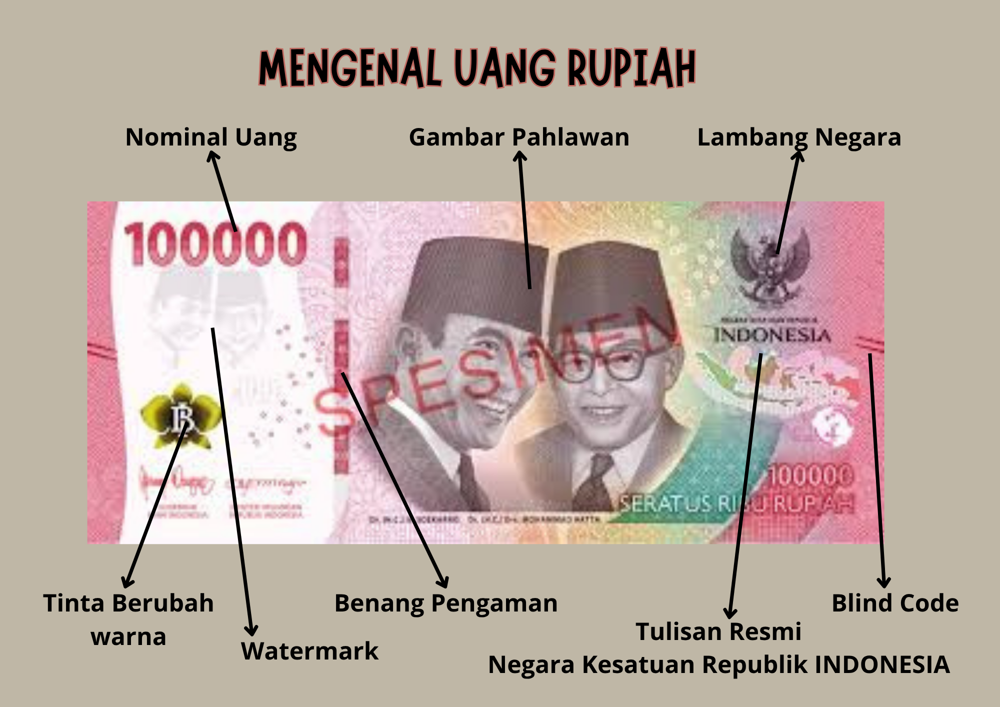

Cinta, Bangga, Paham Rupiah
Media Edukasi Interaktif Mengenal Mata Uang Negara Kita
Media Edukasi Interaktif Mengenal Mata Uang Negara Kita
Rupiah adalah mata uang resmi Indonesia yang hadir dalam berbagai pecahan seperti Rp1.000, Rp50.000, hingga Rp100.000. Lebih dari sekadar alat pembayaran, setiap lembar Rupiah merupakan simbol perjuangan, kedaulatan, dan identitas bangsa yang merekam kekayaan tokoh, budaya, flora, serta fauna Nusantara.

Gambar: Ragam Pecahan Uang Rupiah Republik Indonesia
📜 Sekilas Sejarah RupiahUntuk menjaga nilai dan kehormatan mata uang negara, Bank Indonesia mengajak seluruh masyarakat untuk menerapkan tiga sikap utama:
Rupiah adalah alat pembayaran yang sah di Indonesia. Artinya, semua transaksi di wilayah Indonesia wajib menggunakan rupiah sesuai Undang-Undang Mata Uang. Simbol rupiah adalah Rp.
Cinta Rupiah adalah sikap menghargai, menjaga, dan memperlakukan uang rupiah dengan baik. Bukan hanya sekadar memakai uang, tetapi juga memahami cara menjaga keaslian dan kondisi uang.
Cinta rupiah terdiri dari:
Pada lembaran uang rupiah asli terdapat ciri-ciri khusus berikut:

Gambar: Ciri Khas Seni dan Atribut Resmi Lembaran Uang Rupiah
Metode terkenal dari Bank Indonesia:
Merawat uang berarti menjaga uang agar tetap bersih dan tidak rusak.
Karena uang yang rusak akan sulit dikenali keasliannya, cepat sobek, mengurangi kualitas uang, dan membutuhkan biaya besar untuk mencetak ulang.
Uang palsu sangat berbahaya dan merugikan. Masyarakat wajib:
Bangga Rupiah berarti bangga menggunakan rupiah sebagai mata uang Indonesia. Rupiah bukan hanya alat pembayaran, tetapi juga simbol negara dan persatuan bangsa. Gerakan Bangga Rupiah memposisikan uang Rupiah sebagai Lambang Kedaulatan Negara yang sejajar dengan Bendera Merah Putih, Bahasa Indonesia, dan Lagu Kebangsaan.
Kedaulatan berarti negara memiliki kekuasaan sendiri. Jika suatu negara memiliki mata uang sendiri, berarti negara itu mandiri dan berdaulat. Penggunaan rupiah menunjukkan Indonesia negara yang kuat dan merdeka.
Menurut UU No. 7 Tahun 2011, semua transaksi di wilayah Indonesia wajib menggunakan rupiah (seperti membeli makanan, tiket, belanja, atau bayar sekolah). Memakai rupiah membuat ekonomi kita menjadi lebih stabil.
Meskipun Indonesia memiliki banyak suku, bahasa, dan budaya, seluruh masyarakat menggunakan satu mata uang yang sama, yaitu rupiah. Rupiah menjadi alat pemersatu bangsa.
Di setiap lembar uang rupiah terdapat gambar pahlawan nasional, tarian daerah, alam Indonesia, dan kebudayaan Nusantara yang menunjukkan kekayaan budaya kita.
Paham Rupiah berarti memahami cara menggunakan uang dengan bijak dan mengetahui peran rupiah dalam kehidupan sehari-hari.
Uang berfungsi sebagai alat pembayaran, alat tukar, dan penyimpan nilai. Transaksi saat ini bisa dilakukan secara:
Belanja harus sesuai dengan kebutuhan, bukan sekadar menuruti keinginan semata.
| 📋 Kebutuhan (Harus Ada) | ✨ Keinginan (Bisa Ditunda) |
|---|---|
| 📚 Buku sekolah | 🧸 Mainan baru |
| 🍲 Makanan pokok | 🍦 Jajan berlebihan |
| 👔 Seragam sekolah | 👟 Barang tren baru |
Hemat bukan berarti pelit, melainkan menggunakan uang secara cerdas. Contohnya: membawa bekal, menabung rutin, menghindari barang tidak penting, dan merawat barang yang sudah dimiliki.
Tonton video resmi berikut untuk memperdalam wawasan seputar Rupiah
🎥 Sumber: Bank Indonesia Channel
🎥 Sumber: Bank Indonesia Channel
🎥 Sumber: Bank Indonesia Channel
🎥 Sumber: Bank Indonesia Channel